sofle_pico default 固件
键位图、OLED 显示内容预览、烧录说明。图片都是按固件里的绘图代码逐字节重放出来的，不是照片。
| 键盘 / keymap | sofle_pico / default（RP2040，分体，左右各一个 EC11） |
|---|---|
| 固件 | sofle_pico_default.uf2 · 277,504 字节 · 构建于 2026-10-08 00:06 |
| SHA-256 | e43f25fde7cb681e5201c7914567e69727b7f9b5612745651c685eeb55ac9150 |
| QMK | tag 0.34.5-19-g59053807a4 · commit 59053807a4（2026-10-01） |
| 硬件排查 | matrix_map_left.svg（左手矩阵图）· pico_pinout.svg（Pico 引脚图）· hardware_check.md（排查流程） |
| 键位图 | keymap_layers.svg（矢量）· keymap_layers.png（2 倍光栅） |
| 灯光 | led_map.svg（矢量）· led_map.png（2 倍光栅）——58 颗逐键 RGB 的索引、矩阵位置和灯带走向；ADJUST 层上有开关/切换/色相/饱和/亮度/速度键和 9 个灯效直达键（含默认的纯白常亮，见下面「LED 灯效」） |
| 编译命令 | qmk compile -kb sofle_pico -km default |
| 层 | QWERTY(0) / LOWER(1) / RAISE(2) / ADJUST(3)，LOWER+RAISE 三键组合出 ADJUST |
| 旋钮 | 左：音量 ± / 按压静音 右：上一首·下一首 / 按压播放暂停 |
| VIA 测试器 | 固件里开了 VIA_INSECURE，VIA 网页版的 Key Tester 才能读到实时按键（代价：raw HID 可被读键盘，见 README） |
| ADJUST 层 | 灯光键（开关 / 切换 / 色相 / 饱和 / 亮度 / 速度 + 9 个灯效直达，第一个是纯白常亮）· OLED（左右各一个，切换本侧画面）· EE_CLR（清 EEPROM）· Mac/Win · Boot · 媒体键；这一层两个旋钮临时改成调灯（左=亮度、右=速度） |
键位图（四层）
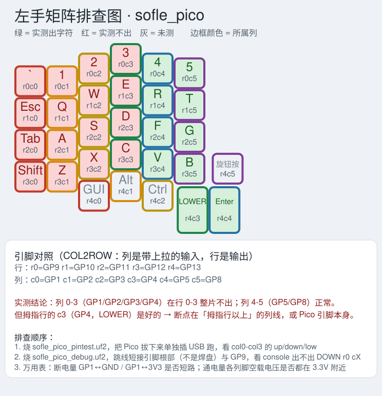
每个键标出物理键位和 rXcY，绿色=实测能出、红色=实测不出；边框颜色=所属列。配 pico_pinout.svg 一起看
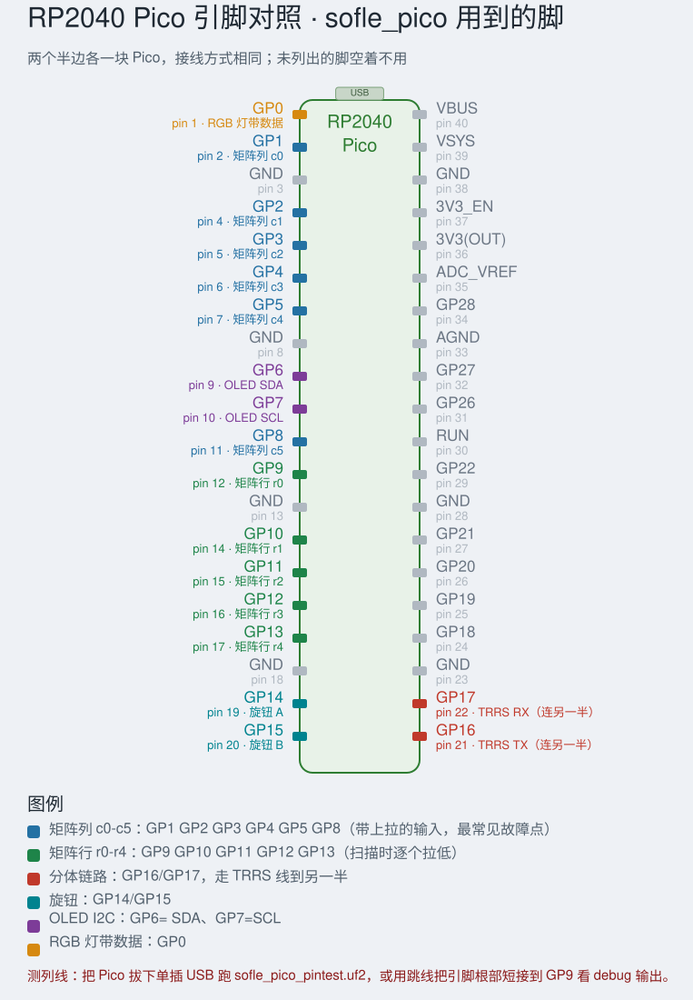
40 脚里矩阵行/列、RGB、OLED、旋钮、TRRS 各是哪些，测引脚时对着找
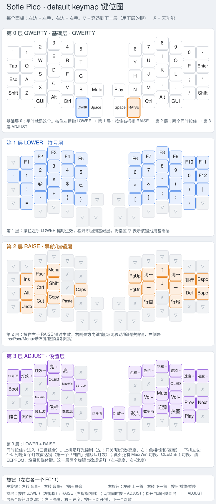
矢量版放多大都不糊；PNG 版：keymap_layers.png（2 倍，1468x3300）；文字版见 keymap.md
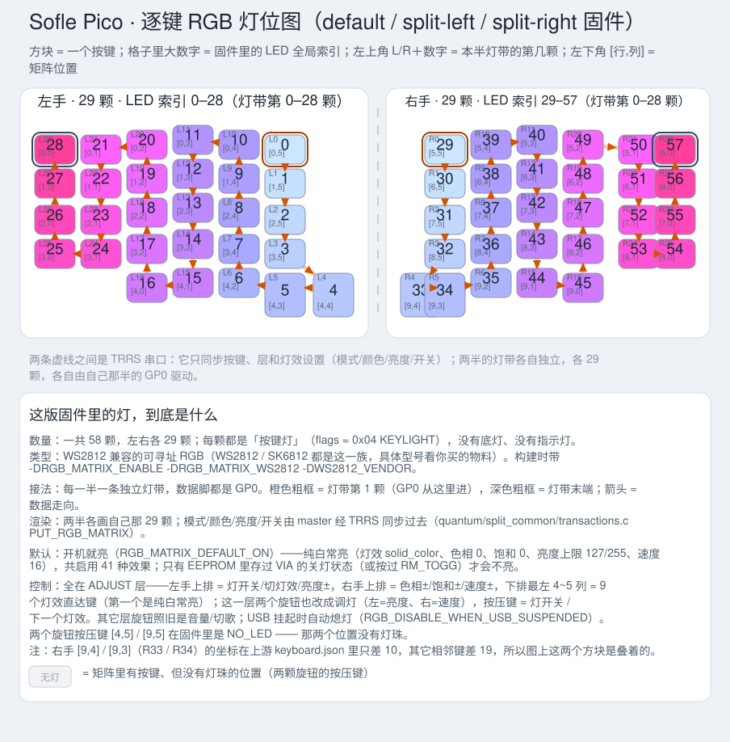
58 颗 WS2812 逐键灯的全局索引、本半灯带序号、矩阵位置和灯带走向；左右各一条独立灯带，数据脚 GP0
LED 灯效（逐键 RGB · 左右各 29 颗）
出厂默认是纯白常亮（solid_color + 饱和 0，58 颗灯一起白），
下面是它和另外 8 种灯效。这些动画都是把固件里的灯效代码拿到电脑上逐帧重放出来的，不是照着效果图临摹：
led_effects/harness.c 直接编译 quantum/rgb_matrix/animations/ 里的真实源码，
用真的 g_led_config 坐标和真的 hsv_to_rgb() 跑 120 帧，再画成 GIF / 网页动画。
按键涟漪和打字热图那两种，画面里的“打字”是按固定节奏注入的按键事件（约 59 WPM）打出来的。
ADJUST 层上的灯光键（左右各一组）
| 开 / 关 | RM_TOGG （ADJUST 层左旋钮按下也是它） |
|---|---|
| 换灯效 | RM_NEXT / RM_PREV 在 41 种里前后翻 （右旋钮按下 = 下一个） |
| 亮度 | RM_VALU / RM_VALD 或 ADJUST 层左旋钮（同层的音量键不受影响） |
| 色相 / 饱和 | RM_HUEU / RM_HUED、RM_SATU / RM_SATD |
| 速度 | RM_SPDU / RM_SPDD 或 ADJUST 层右旋钮 |
| 纯白常亮 | FX_WHITE（ADJUST 层下排最左，出厂默认灯效）——饱和度归零 + 切到 solid_color，亮度也回到出厂值（127），相当于「恢复出厂灯效」 |
| 直达 9 种 | ADJUST 层 row3 最左边 4~5 列（左 5 右 4）：FX_WHITE · FX_CYCLE_OUT_IN · FX_HUE_WAVE ·
FX_RAINBOW_BEACON · FX_PIXEL_FLOW · FX_JELLYBEAN ·
FX_DIGITAL_RAIN · FX_REACTIVE_NEXUS · FX_TYPING_HEATMAP |
| 其它层 | 这几个键只写在 ADJUST 层，别的层上旋钮照旧是音量 / 切歌；直达键只改 RAM，重启回到 EEPROM 里的设置 |
| EEPROM | 键位表变了（SOFLE_EEPROM_VERSION 现在是 4），烧完第一次启动会顺手把键位和灯光设置都刷回固件默认——也就是纯白常亮；之后在 VIA / 键盘上改的灯效会一直留着 |
每个灯效一段 GIF
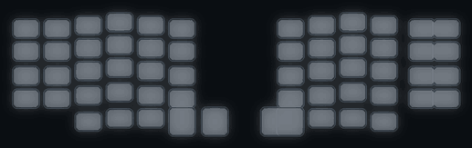
FX_WHITE · 出厂默认。solid_color 灯效 + 饱和 0，58 颗灯一起白：hsv(0,0,127) 过 CIE1931 曲线 = RGB(47,47,47)。
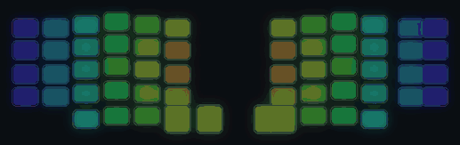
FX_CYCLE_OUT_IN · 整块键盘同一个色相，按到键盘中心的距离决定相位，一圈圈向外推。
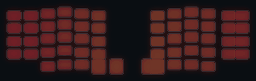
FX_HUE_WAVE · 色相随 X 坐标偏移，像一道彩虹从左往右扫过。
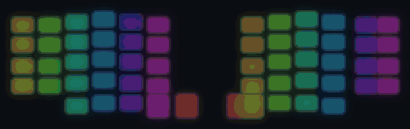
FX_RAINBOW_BEACON · 两道彩虹光柱绕着键盘中心旋转，像灯塔。
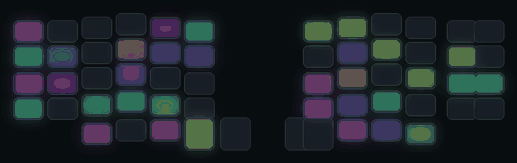
FX_PIXEL_FLOW · 颜色沿对角方向流动，一格一格地推过去。
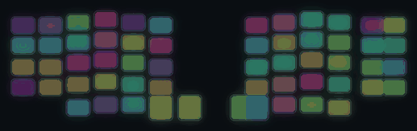
FX_JELLYBEAN · 每帧随机挑几颗灯换一个随机颜色，再慢慢暗下去，像撒糖豆。
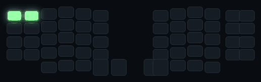
FX_DIGITAL_RAIN · 一列列绿色光点从上往下落，落到头就换一列重新开始。
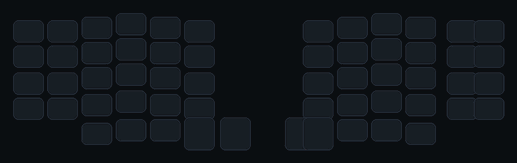
FX_REACTIVE_NEXUS · 从按下的那颗灯向四周扩散的光圈，多个按键可以叠加。
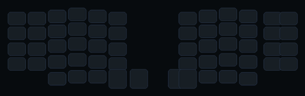
FX_TYPING_HEATMAP · 按过的位置亮起来，越按越亮，停下来后慢慢冷掉。
OLED 画面
每一半都能用自己那侧的 OLED 键循环切换：
status → stats → graph → layers → 4 组小怪物动画（正色）→ 4 组反色 → 雪人（正色）→ 雪人（反色）。
按住不放会自动往下翻（每 400 ms 一张），
不用点十几次。默认左边 status、右边第一组动画；选择只存 RAM，重启回到默认。
开机时两半都会先播 ~1.8 秒动画。
① 信息屏（默认：左手显示 status）
四类共 13 个画面：status 状态屏（层名 / Mac-Win / 实时修饰键 / 峰值 / WPM 进度条 / Caps）、 stats 统计（按键数 / WPM / 峰值 / 当前层 / 运行时间）、 graph WPM 曲线（大号数字 + 最近 21 秒柱状图）、 layers 层状态（四个层的开关，能看出三键组合出 ADJUST）。


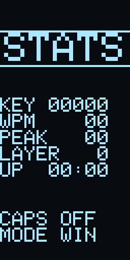
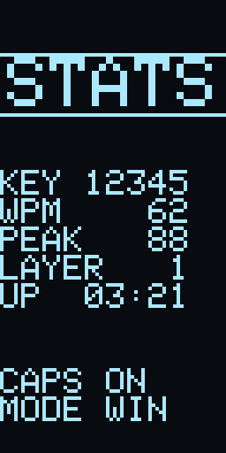
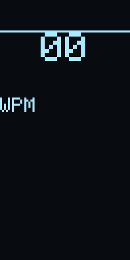
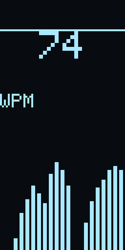
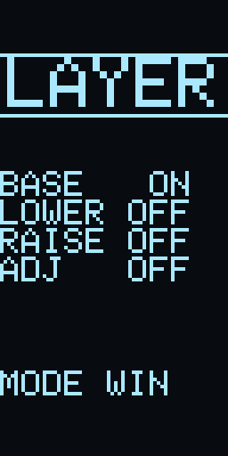
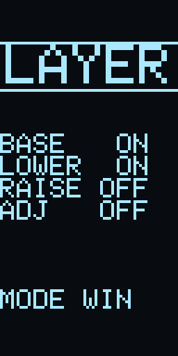
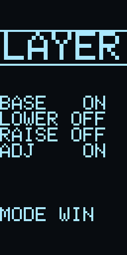
② anim 动画（默认：右手第一组）
四组大眼小怪物的 8 帧循环（8 fps）：bounce / wave / walk / sleep。 每组都有 GIF，下面按组列出全部帧。
anim 1/4 · bounce — hop, squash on landing, blink, arms swing
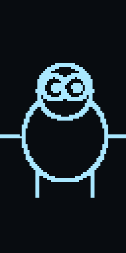
8 帧 / 8 fps
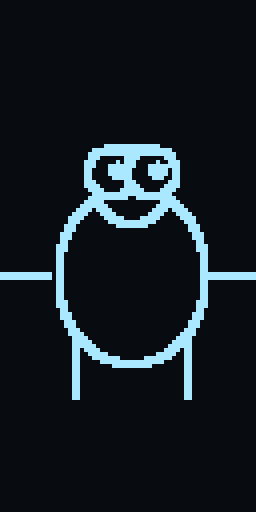

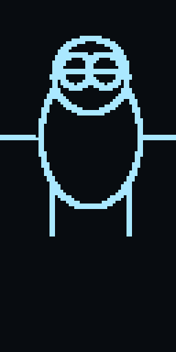
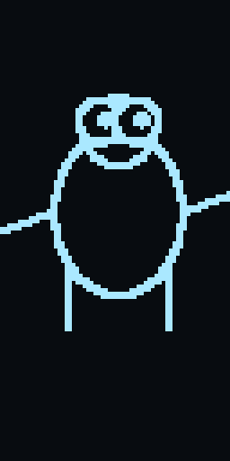
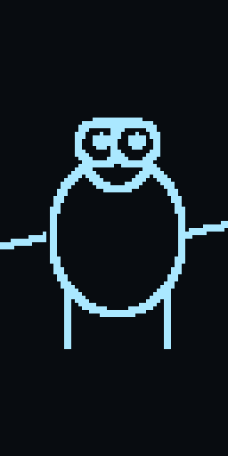
anim 2/4 · wave — standing, waving one arm hello


anim 3/4 · walk — marching in place, arms swinging the other way


anim 4/4 · sleep — eyes shut, breathing slowly, z's drifting up

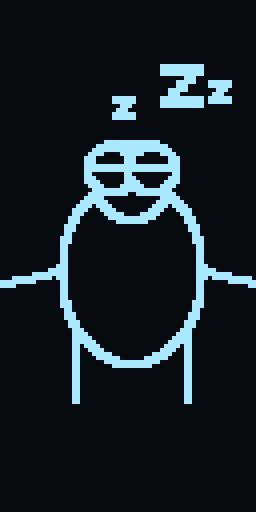
8 帧 / 8 fps

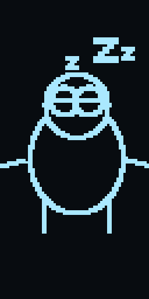

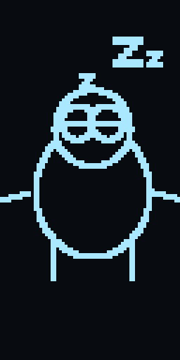

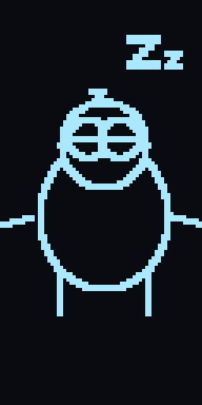


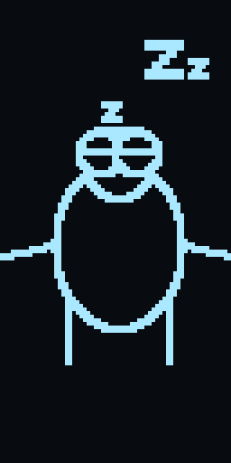


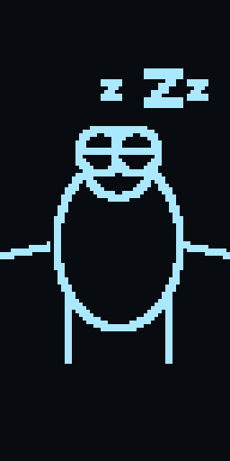
③ 雪人那组（另一套动画图）
从 oled_snow1.pdf / oled_snow2.pdf 里抽出来的两个滑雪小人，
缩到 64 px 宽后就是 oled_snow.h 的两帧。右半的动画屏由 ADJUST 层的
就是原来那个 OLED 键循环里的画面——四组小怪物动画之后，正色一屏、反色一屏，
不用另按别的键。
雪人 · snow_pair — oled_snow.h（oled_snow1/2.pdf 抽出的 2 帧）；OLED 键循环里的 snow 画面（四组反色动画之后）

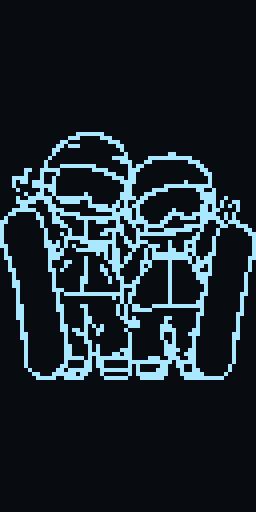
2 帧


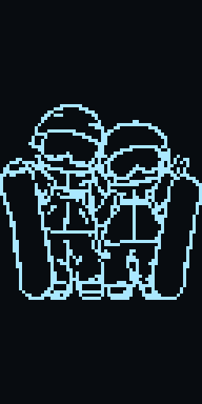

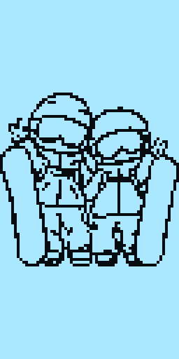
2 帧 · 白天模式


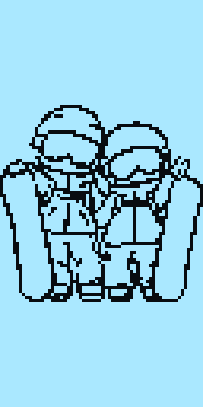

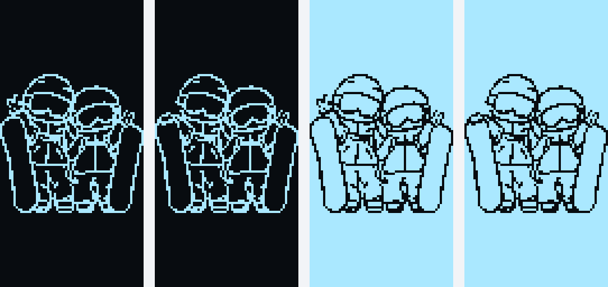
左二正色、右二反色
烧录
进 bootloader
按住 Pico 的 BOOT → 点一下 RST → 先松 RST 再松 BOOT，
会出现名为 RPI-RP2 的 U 盘。
把 sofle_pico_default.uf2 拖进去即可。或用命令：
两个半边各烧各的（EE_HANDS 的手性存在 EEPROM 里）：
sofle_pico_default_split-left.uf2→ 左手（启动时强制手性=左）sofle_pico_default_split-right.uf2→ 右手（启动时强制手性=右）sofle_pico_default.uf2→ 任意半边，不动手性（确定本来是对的才用）
qmk flash -kb sofle_pico -km default -bl uf2-split-left（右半换成 -right）
EEPROM 里的键位会自动跟着更新
固件启用了 VIA，键位是从 EEPROM 读的，keymap.c 只在 EEPROM 首次初始化时写进去。
所以固件里放了一个 SOFLE_EEPROM_VERSION：启动时发现 EEPROM 的版本对不上，
就自动用固件里的键位重写一遍。改了层结构只要把这个常量 +1，烧完启动就生效。
手动兜底仍然在：ADJUST 层的 EE_CLR（左手 T 键位置）或 VIA 的 Reset Keymap。
另外：两个旋钮若拧反了，把 encoder_map 里那一对键码对调即可。
相关文件
- README.md —— 构建信息、功能要点、验证记录、注意事项
- keymap.md —— 四层键位表、换层方式、旋钮、自定义键
- oled_preview/README.md —— OLED 三种画面、切换机制、换图方法
- sofle_pico_default.uf2 · .hex · .elf · .map
gen_index.py/gen_keymap_image.py/gen_matrix_image.py/gen_pico_pinout.py/gen_led_map.py/oled_preview/gen_oled_preview.py—— 本页图片的生成脚本- verify_keymap.py —— 从编译好的 ELF 里读回
keymaps/encoder_map并按层打印键码名字（改完 keymap.c 用它确认真的编进去了） - led_effects/README.md · harness.c —— 灯效逐帧采集器：在电脑上编译真实的 QMK 灯效源码，导出每一帧的 58 颗灯颜色
gen_led_effects.py·led_effects.js·led_player.js—— 把逐帧数据画成 GIF，并给本页的互动播放器用